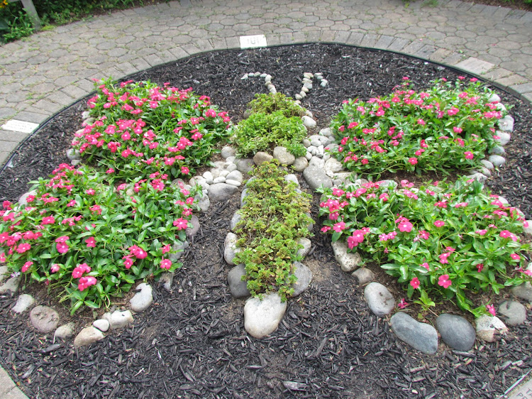

Karen Nash Memorial Butterfly Garden
Become a Volunteer
For teens, college students and adult volunteers: Before your first day volunteering, print and fill out this paper and bring it with you to the garden:
For Youth Gardeners: Parents please complete this online form before your child's first day of gardening:
Garden Rules:
- Youth must be accompanied by an adult
- No smoking & no cigarette littering
- Do not throw rocks into the bird bath
- Never block crosswalks with vehicles (wheelchair- bound students, wheel- barrels, and students carrying tools use the crosswalks.)
- Do not walk on rock walls; please remain on the paths. Thank you for NOT RUNNING.
Gardeners:
- Always bring plenty of drinking water & your snack.
- Wear clothes & shoes that can get muddy. Old sneakers & pants are suggested.
- Socks are required. No open toed shoes, no sandals,& no flip flops!